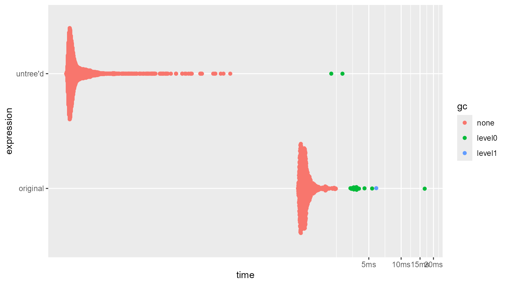

Benchmarks - Vectorized Recursive Subset Operations On Nested Lists
Source:vignettes/articles/c_benchmarks_lst.Rmd
c_benchmarks_lst.Rmd
library(squarebrackets)
#> Run `?squarebrackets::squarebrackets_help` to open the introduction help page of 'squarebrackets'.
Introduction
Operating on recursive sub-sets of a nested lists requires the
[[ and [[<- operators. These operators can
only select a single subset at once. Thus, operating on multiple
recursive sub-sets requires a for-loop, and is thus not vectorized.
The lst_untree() function unnests a tree-like nested
list into a recursive matrix, in such a way that recursive sub-set
operations can be performed in a vectorized manner.
Below are the benchmarks on operating on the original list, and the
list transformed by lst_untree().
x <- lapply(1:1000, \(x) list(
list(sample(letters), sample(LETTERS)),
list(sample(month.abb), sample(month.name)),
list(sample(1:100), rnorm(100))
))
y <- lst_untree(x, 1)
foo <- bench::mark(
original = for(i in seq_along(x)) {x[[c(i, c(1,2))]]},
"untree'd" = sb2_x(n(seq_len(nrow(y)), 2), 1:2),
check = FALSE,
min_iterations = 1000
)
summary(foo)
#> # A tibble: 2 × 6
#> expression min median `itr/sec` mem_alloc `gc/sec`
#> <bch:expr> <bch:tm> <bch:tm> <dbl> <bch:byt> <dbl>
#> 1 original 1.08ms 1.23ms 768. 38.4KB 14.1
#> 2 untree'd 8µs 9.1µs 98959. 89.3KB 9.90
ggplot2::autoplot(foo)
#> Loading required namespace: tidyr